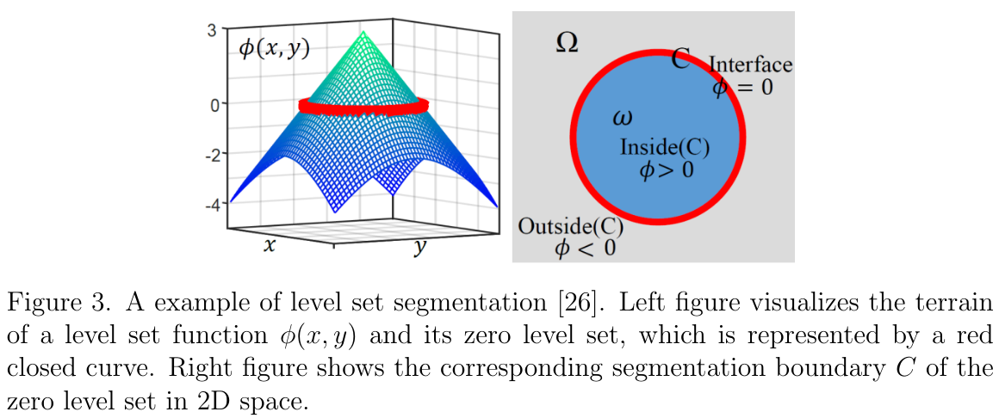
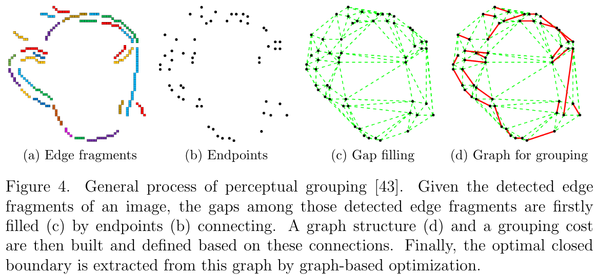

Edge-based Object Tracking
Candidate: Xuebin Qin
Supervisor: Dr. Martin Jagersand
Department of Computing Science, University of Alberta, Edmonton, AB, Canada, T6G 2R3.
ABSTRACT
The proposed research targets at employing edge and boundary information to facilitate tracking of targets in unstructured environment. First, an effective and efficient edge-based representation method will be proposed to acquire accurate and detailed descriptions of the to-be-tracked targets. Second, a novel tracking framework which utilizes edge and boundary information will be developed. In addition, to evaluate and validate the newly proposed method, a well-annotated tracking dataset which contains video sequences and pixel-accurate ground truth will be created. The success of the proposed work will be beneficial to both computer vision and robotics communities.
I. Motivation
Visual tracking is an important issue in both computer vision and robotics. Many existing trackers, eg. Lucas-Kanade (KLT), Tracking-Learning-Detection (TLD), Kernelized Correlation Filter tracker (KCF), use regional information to estimate the trajectory and transformation of the to-be-tracked targets. To achieve robust and stable performance, relatively large area of image region with rich textures is required for object tracking. Region-based trackers have some limitations. First, these regions are usually represented by bounding boxes or quadrilaterals which are inaccurate for describing complex targets. Second, region information is not always available. For example, it is difficult to obtain enough region information from these objects: uneven surfaces, hollow objects, thin targets and tiny structures, such as cup rims, cables, rings and so on, as shown in Fig. 1. Being able to track these objects are essential in applications such as robot manipulation and grasping. Additionally, many targets in our daily life are non-lambertian so that their regional appearance changes drastically with even slight motion or transformation.

II. Background and Related Works
Edge-based object tracking methods can be categorized into three main classes:
(1). Registration-based edge template tracking
This class of trackers estimates the geometric transformations, such as affine and homography, of planar rigid templates from one frame to the next one [23], [58], [25], [34].
Registration-based trackers can estimate both low and high degree-of-freedom (DOF) transformations like affine and homography H(or W(x;p)) of planar rigid targets by minimizing the alignment errors between the templates T(x) and the incoming framesI(x). This kind of methods have been widely used in image alignment and tracking, as shown in Fig. 2. These registration-based template tracking methods are fast. However, they are not able to handle non-rigid transformations and are sensitive to outlier edge pixels.

(2). Segmentation-based methods for contour tracking
This class of trackers determines boundaries on each frame by segmenting images into foreground and background.
Variational methods, such as level sets (Fig. 3) [62], [4], [53] and active contour[46], have already been used to track the contours of those non-rigid targets. To use variational methods, there has to be high contrast between the target and the background.
(3). Grouping-based closed boundary tracking
This class of trackers searches for a special cycle of low level primitives (e.g. edge fragments, line segments) forming the closed boundaries [50], [42], [43], as shown in Fig. 4.
Saliency-based methods [50] can also be used to track non-rigid objects. However, these methods are more likely to trap in local minima in cluttered environ-ments [41] and are sensitive to occlusions. Additionally, most of them require thatthe to-be-tracked targets have to be represented by closed boundaries.
III. Proposed Work
1. Objectives
The purpose of the proposed research is to develop an edge-based object trackingframework. The research mainly contains the following two parts:
(1) Target description and benchmark:
Currently, most existingtrackers describe targets as square bounding boxes or contour with single closed boundary. Hence, in this research my first goal is to propose a new edge-based representation for accurately describing targets with arbitrary shapesand structures. Then, a standard dataset with manually labeled ground truthwill be created to serve as a benchmark for my proposed method and relatedstudies. Additionally, to reduce human workload in image and video labeling,a novel tool for interactive object annotation will be developed.
(2) A novel edge-based tracking framework:
A novel edge-based framework will be developed to track rigid and non-rigidtargets with arbitrary shapes and transformations. In particular, this trackingframework is expected to achieve high accuracy and robustness, even for ex-treme cases such as low textures, cluttered backgrounds, illumination changes,occlusions and non-lambertian.
I almost finished the main work of the first part [44]. Currently, I am working on the second part, developing a general framework for edge-based object tracking. I have already developed two kinds of edge-based trackers based on registration [45] and grouping [42] [43]. However, they are limited to certain scenarios and not able to overcome all the challenges below. For example, grouping-based trackers [42] [43] work well with low textured targets and non-rigid transformations. But it is easy to fail because of partial occlusions and cluttered backgrounds. Registration-based edge tracker performances better than grouping-based trackers in handling partial occlusions. However, it is not able to track non-planar targets and non-rigid transformations.
2. Challenges and Possible Solutions
(1) How to track with limited image information?
Given an edge template and a new frame, a more robust edge detection method will be developed to extract more robust and holistic edge information from the current frame. Particularly, I will try to combine the conventional local edge detection [7] [54] and learning-based global boundary detection [60] [33] together. Besides, I plan to use direct method other than feature-based method for the tracking, which means every edge pixel of the edge template will be aligned to their corresponding ones on the current frame. These two techniques will guarantee the stable and rich information for tracking.
(2) How to define the target motion model?
Any complicated motions of a target can be approximated by two DOF translations ofthe target’s sub-parts (edge pixels in my research). However, it is difficult to have stable estimations based on too many independent two DOF translations. Therefore, to provide a universal motion model to the planar and non-planar targets, rigid and non-rigid targets, I will define the two DOF motion model (translation) on each edge pixel and impose geometry, topology and graph constraints on their relative motions to estimate the complicated motions.
(3) How to handle outlier introduced by cluttered backgrounds?
To reduce the impacts of outlier edge pix-els, I plan to build a shape constrained generative or discriminative model to filter most of those noisy edge pixels. Meanwhile, a new cost function for non-linear reg-istration will be proposed to overcome small ratio of noisy edge pixels. Specifically, there are mainly two possibilities: (a) design a classifier (could be a neural network[29] or other classifiers) to filter outlier pixels, and then develop another constrained non-linear registration method for tracking, (b) integrate the outlier removal and the non-linear registration into one optimization process.
(4) How to handle partial occlusions and recover from complete occlusions?
To handle occlusions and tracking failure, a new procedure will be developed to recover tracker from tracking failures. First, a criterion for judging the tracking failure will be proposed. Second, a novel detection method will be designed to detect unsuccessfully tracked target from the whole frame.
(5) How to achieve real-time performance?
To achieve real-time performance, methods of edge pixels sampling will be studied to reduce the computation time while maintaining the tracking robustness and accuracy. Additionally, both CPU-based and GPU-based implementations will be tested. Different implementations will be used in the corresponding scenarios.
IV. Finished Works
Xuebin Qin, Shida He, Zichen Zhang, Masood Dehghan, Jun Jin and Martin Jagersand. "Real-Time Edge Template Tracking via Homography Estimation"
Accepted in the IEEE/RSJ International Conference on Intelligent Robots and Systems (IROS), October 2018.
[pdf][code][data][video]
Xuebin Qin, Shida He, Zichen Zhang, Masood Dehghan and Martin Jagersand. "ByLabel: A Boundary based Semi-Automatic Image Annotation Tool"
IEEE Winter Conf. on Applications of Computer Vision (WACV), March 2018.
[pdf][code][video][project page]
Xuebin Qin, Shida He, Zichen Zhang, Masood Dehghan and Martin Jagersand. "Real-time salient closed boundary tracking using perceptual grouping and shape priors."
the 28th British Machine Vision Conference, London, UK, September 2017. (BMVC Spotlight Poster)
[pdf][code][data][video][poster]
Xuebin Qin, Shida He, Camilo Perez Quintero, Abhineet Singh, Masood Dehghan and Martin Jagersand. "Real-time salient
closed boundary tracking via line segments perceptual grouping." 2017 IEEE/RSJ International Conference on Intelligent Robots and Systems (IROS), pp. 4284--4289, Vancouver, BC, Canada, September 24–28, 2017.
[pdf][code][data][vido]
Shida He, Xuebin Qin, Zichen Zhang and Martin Jagersand, Incremental 3D Line Segment Extraction from Semi-dense SLAM, accepted at International Conference on Pattern Recognition (ICPR), August 2018.
[project page]
Xuebin Qin, Shida He, Xiucheng Yang, Masood Dehghan, Qiming Qin and Martin Jagersand. "Accurate Outline Extraction of Individual Building from High Resolution Aerial Images"
Accepted in IEEE Geoscience and Remote Sensing Letters (GRSL), 2018.
[project page]
Xuebin Qin, Martin Jagersand, Xiucheng Yang, and Jun Wang. "Building facade recognition from aerial images using Delaunay Triangulation induced feature perceptual grouping."
In Pattern Recognition (ICPR), 2016 23rd International Conference on, pp. 3368-3373. IEEE, 2016.
[pdf][code]
References
[1] T. D. Alter and Ronen Basri. Extracting salient curves from images: An analysisof the saliency network.International Journal of Computer Vision, 27(1):51–69,1998.
[2] Alex M. Andrew.Multiple View Geometry in Computer Vision, by richard hart-ley and andrew zisserman, cambridge university press, cambridge, 2000, xvi+607pp., ISBN 0-521-62304-9 (hardback,£60.00).Robotica, 19(2):233–236, 2001.
[3] Simon Baker and Iain A. Matthews. Lucas-kanade 20 years on: A unifyingframework.International Journal of Computer Vision, 56(3):221–255, 2004.
[4] Charles Bibby and Ian D. Reid. Real-time tracking of multiple occluding objectsusing level sets. InThe Twenty-Third IEEE Conference on Computer Vision andPattern Recognition, CVPR 2010, San Francisco, CA, USA, 13-18 June 2010,pages 1307–1314, 2010.
[5] Gunilla Borgefors. Distance transformations in digital images.Computer Vision,Graphics, and Image Processing, 34(3):344–371, 1986.
[6] Gunilla Borgefors. Hierarchical chamfer matching: A parametric edge matchingalgorithm.IEEE Transactions on pattern analysis and machine intelligence,10(6):849–865, 1988.
[7] John F. Canny. A computational approach to edge detection.IEEE Trans.Pattern Anal. Mach. Intell., 8(6):679–698, 1986.
[8] Vicent Caselles, Ron Kimmel, and Guillermo Sapiro. Geodesic active contours.International Journal of Computer Vision, 22(1):61–79, 1997.
[9] Changhyun Choi and Henrik I. Christensen. 3d textureless object detection andtracking: An edge-based approach. In2012 IEEE/RSJ International Conferenceon Intelligent Robots and Systems, IROS 2012, Vilamoura, Algarve, Portugal,October 7-12, 2012, pages 3877–3884, 2012.
[10] Amaury Dame.A unified direct approach for visual servoing and visual trackingusing mutual information. PhD thesis, Universit ́e Rennes 1, 2010.
[11] Martin Danelljan, Fahad Shahbaz Khan, Michael Felsberg, and Joost van deWeijer. Adaptive color attributes for real-time visual tracking. In2014 IEEEConference on Computer Vision and Pattern Recognition, CVPR 2014, Colum-bus, OH, USA, June 23-28, 2014, pages 1090–1097, 2014.
[12] Edsger W Dijkstra. A note on two problems in connexion with graphs.Nu-merische mathematik, 1(1):269–271, 1959.[13] Tom Drummond and Roberto Cipolla. Real-time visual tracking of complexstructures.IEEE Trans. Pattern Anal. Mach. Intell., 24(7):932–946, 2002.
[14] Stefan Duffner and Christophe Garcia. Pixeltrack: A fast adaptive algorithmfor tracking non-rigid objects. InIEEE International Conference on ComputerVision, ICCV 2013, Sydney, Australia, December 1-8, 2013, pages 2480–2487,2013.
[15] James H. Elder, Amnon Krupnik, and Leigh A. Johnston. Contour grouping withprior models.IEEE Trans. Pattern Anal. Mach. Intell., 25(6):661–674, 2003.
[16] James H. Elder and Steven W. Zucker. Computing contour closure. InComputerVision - ECCV’96, 4th European Conference on Computer Vision, Cambridge,UK, April 15-18, 1996, Proceedings, Volume I, pages 399–412, 1996.
[17] Chaumette F. and Hutchinson S.Visual Servoing and Visual Tracking. Springer,Berlin, Heidelberg, 2008.
[18] Christian Forster, Matia Pizzoli, and Davide Scaramuzza. SVO: fast semi-directmonocular visual odometry. In2014 IEEE International Conference on Roboticsand Automation, ICRA 2014, Hong Kong, China, May 31 - June 7, 2014, pages15–22, 2014.
[19] Steffen Gauglitz, Tobias H ̈ollerer, and Matthew Turk. Evaluation of interestpoint detectors and feature descriptors for visual tracking.International Journalof Computer Vision, 94(3):335–360, 2011.
[20] Martin Godec, Peter M. Roth, and Horst Bischof. Hough-based tracking of non-rigid objects.Computer Vision and Image Understanding, 117(10):1245–1256,2013.edings, Part I, pages 35–44, 2008.
[21] Gregory D Hager and Peter N Belhumeur. Efficient region tracking with paramet-ric models of geometry and illumination.IEEE transactions on pattern analysisand machine intelligence, 20(10):1025–1039, 1998.
[22] David Held, Sebastian Thrun, and Silvio Savarese. Learning to track at 100FPS with deep regression networks. InComputer Vision - ECCV 2016 - 14thEuropean Conference, Amsterdam, The Netherlands, October 11-14, 2016, Pro-ceedings, Part I, pages 749–765, 2016.
[23] Andreas Hofhauser, Carsten Steger, and Nassir Navab. Edge-based templatematching and tracking for perspectively distorted planar objects. InAdvancesin Visual Computing, 4th International Symposium, ISVC 2008, Las Vegas, NV,USA, December 1-3, 2008. Proceedings, Part I, pages 35–44, 2008.
[24] Andreas Hofhauser, Carsten Steger, and Nassir Navab. Harmonic deformationmodel for edge based template matching. InVISAPP 2008: Proceedings of theThird International Conference on Computer Vision Theory and Applications,Funchal, Madeira, Portugal, January 22-25, 2008 - Volume 2, pages 75–82, 2008.
[25] Stefan Holzer, Stefan Hinterstoisser, Slobodan Ilic, and Nassir Navab. Dis-tance transform templates for object detection and pose estimation. In2009IEEE Computer Society Conference on Computer Vision and Pattern Recogni-tion (CVPR 2009), 20-25 June 2009, Miami, Florida, USA, pages 1177–1184,2009.
[26] Ping Hu, Bing Shuai, Jun Liu, and Gang Wang. Deep level sets for salientobject detection. In 2017 IEEE Conference on Computer Vision and Pattern Recognition, CVPR 2017, Honolulu, HI, USA, July 21-26, 2017, pages 540–549,2017.
[27] Ryan Kennedy, Jean H. Gallier, and Jianbo Shi. Contour cut: Identifying salientcontours in images by solving a hermitian eigenvalue problem. InThe 24th IEEEConference on Computer Vision and Pattern Recognition, CVPR 2011, ColoradoSprings, CO, USA, 20-25 June 2011, pages 2065–2072, 2011.
[28] Georg Klein.Visual tracking for augmented reality. PhD thesis, In: Siciliano B.,Khatib O. (eds) Springer Handbook of Robotics. Springer, Berlin, Heidelberg,2006.
[29] Alex Krizhevsky, Ilya Sutskever, and Geoffrey E Hinton. Imagenet classificationwith deep convolutional neural networks. In F. Pereira, C. J. C. Burges, L. Bot-tou, and K. Q. Weinberger, editors,Advances in Neural Information ProcessingSystems 25, pages 1097–1105. 2012.
[30] Manohar Kuse and Shaojie Shen. Robust camera motion estimation using directedge alignment and sub-gradient method. In2016 IEEE International Confer-ence on Robotics and Automation, ICRA 2016, Stockholm, Sweden, May 16-21,2016, pages 573–579, 2016.
[31] Junghyun Kwon, Hee Seok Lee, Frank C. Park, and Kyoung Mu Lee. A geometricparticle filter for template-based visual tracking.IEEE Trans. Pattern Anal.Mach. Intell., 36(4):625–643, 2014.
[32] Pengpeng Liang, Yifan Wu, and Haibin Ling. Planar object tracking in the wild:A benchmark.CoRR, abs/1703.07938, 2017.
[33] Yun Liu, Ming-Ming Cheng, Xiaowei Hu, Kai Wang, and Xiang Bai. Richerconvolutional features for edge detection. In2017 IEEE Conference on ComputerVision and Pattern Recognition, CVPR 2017, Honolulu, HI, USA, July 21-26,2017, pages 5872–5881, 2017.[34] Zhao Liu, Hui Shen, Guiyu Feng, and Dewen Hu. Tracking objects using shapecontext matching.Neurocomputing, 83:47–55, 2012.
[35] James MacQueen et al. Some methods for classification and analysis of multivari-ate observations. InProceedings of the fifth Berkeley symposium on mathematicalstatistics and probability, volume 1, pages 281–297. Oakland, CA, USA, 1967.
[36] Shyjan Mahamud, Lance R. Williams, Karvel K. Thornber, and Kanglin Xu.Segmentation of multiple salient closed contours from real images.IEEE Trans.Pattern Anal. Mach. Intell., 25(4):433–444, 2003.
[37] Abdol-Reza Mansouri. Region tracking via level set pdes without motion com-putation.IEEE Trans. Pattern Anal. Mach. Intell., 24(7):947–961, 2002.
[38] Yansheng Ming, Hongdong Li, and Xuming He. Connected contours: A new con-tour completion model that respects the closure effect. In2012 IEEE Conferenceon Computer Vision and Pattern Recognition, Providence, RI, USA, June 16-21,2012, pages 829–836, 2012.
[39] Vida Movahedi and James H. Elder. Combining local and global cues for closedcontour extraction. InBritish Machine Vision Conference, BMVC 2013, Bristol,UK, September 9-13, 2013, 2013.
[40] Stanley Osher and James A Sethian.Fronts propagating with curvature-dependent speed: algorithms based on hamilton-jacobi formulations.Journalof computational physics, 79(1):12–49, 1988.
[41] Muriel Pressigout and ́Eric Marchand. Real time planar structure tracking for vi-sual servoing: a contour and texture approach. In2005 IEEE/RSJ InternationalConference on Intelligent Robots and Systems, Edmonton, Alberta, Canada, Au-gust 2-6, 2005, pages 251–256, 2005.
[42] Xuebin Qin, Shida He, Camilo Perez Quintero, Abhineet Singh, Masood De-hghan, and Martin J ̈agersand. Real-time salient closed boundary tracking vialine segments perceptual grouping. In 2017 IEEE/RSJ International Confer-ence on Intelligent Robots and Systems, IROS 2017, Vancouver, BC, Canada,September 24-28, 2017, pages 4284–4289, 2017.
[43] Xuebin Qin, Shida He, Zichen Zhang, Masood Dehghan, and Martin Jagersand.Real-time salient closed boundary tracking using perceptual grouping and shapepriors.28th British Machine Vision Conference, BMVC, London, UK, September4-7, 2017.
[44] Xuebin Qin, Shida He, Zichen Zhang, Masood Dehghan, and Martin Jagersand.Bylabel: A boundary based semi-automatic image annotation tool. In Appli-cations of Computer Vision (WACV), 2018 IEEE Winter Conference on, pages1804–1813. IEEE, 2018.
[45] Xuebin Qin, Shida He, Zichen Zhang, Masood Dehghan, Jun Jin, and MartinJagersand. Real-time edge template tracking via homography estimation. In submitted to 2018IEEE/RSJ International Conference on Intelligent Robots and Systems, IROS 2018, Madrid, Spain, October 1-4, 2018.
[46] Yogesh Rathi, Namrata Vaswani, Allen Tannenbaum, and Anthony J. Yezzi.Tracking deforming objects using particle filtering for geometric active contours.IEEE Trans. Pattern Anal. Mach. Intell., 29(8):1470–1475, 2007.
[47] Xiaofeng Ren, Charless C. Fowlkes, and Jitendra Malik. Scale-invariant contourcompletion using conditional random fields. In10th IEEE International Con-ference on Computer Vision (ICCV 2005), 17-20 October 2005, Beijing, China,pages 1214–1221, 2005.
[48] Carsten Rother, Vladimir Kolmogorov, and Andrew Blake. ”grabcut”: inter-active foreground extraction using iterated graph cuts.ACM Trans. Graph.,23(3):309–314, 2004.
[49] Glauco Garcia Scandaroli, Maxime Meilland, and Rog ́erio Richa. Improving ncc-based direct visual tracking. InEuropean conference on Computer Vision, pages442–455, 2012.
[50] Thomas Schoenemann and Daniel Cremers. A combinatorial solution for model-based image segmentation and real-time tracking.IEEE Trans. Pattern Anal.Mach. Intell., 32(7):1153–1164, 2010.
[51] Abhineet Singh and Martin J ̈agersand. Modular tracking framework: A fastlibrary for high precision tracking. In2017 IEEE/RSJ International Confer-ence on Intelligent Robots and Systems, IROS 2017, Vancouver, BC, Canada,September 24-28, 2017, pages 3785–3790, 2017.
[52] Joachim S. Stahl and Song Wang. Edge grouping combining boundary and regioninformation.IEEE Trans. Image Processing, 16(10):2590–2606, 2007.
[53] Xin Sun, Hongxun Yao, Shengping Zhang, and Dong Li. Non-rigid object contourtracking via a novel supervised level set model.IEEE Trans. Image Processing,24(11):3386–3399, 2015.
[54] Cihan Topal, Cuneyt Akinlar, and Yakup Genc. Edge drawing: A heuristicapproach to robust real-time edge detection. In20th International Conferenceon Pattern Recognition, ICPR 2010, Istanbul, Turkey, 23-26 August 2010, pages2424–2427, 2010.
[55] Song Wang, Toshiro Kubota, Jeffrey Mark Siskind, and Jun Wang. Salientclosed boundary extraction with ratio contour.IEEE Trans. Pattern Anal. Mach.Intell., 27(4):546–561, 2005.
[56] Xin Wang, Wei Dong, Mingcai Zhou, Renju Li, and Hongbin Zha. Edge enhanceddirect visual odometry. InProceedings of the British Machine Vision Conference2016, BMVC 2016, York, UK, September 19-22, 2016, 2016.
[57] Max Wertheimer. Untersuchungen zur lehre von der gestalt.Psychological Re-search, 1(1):47–58, 1922.
[58] Tao Wu, Xiaoqing Ding, Shengjin Wang, and Kongqiao Wang. Video objecttracking using improved chamfer matching and condensation particle filter. InImage Processing: Machine Vision Applications, volume 6813, page 681304. In-ternational Society for Optics and Photonics, 2008.
[59] Yi Wu, Jongwoo Lim, and Ming-Hsuan Yang. Object tracking benchmark.IEEETrans. Pattern Anal. Mach. Intell., 37(9):1834–1848, 2015.
[60] Saining Xie and Zhuowen Tu. Holistically-nested edge detection.InternationalJournal of Computer Vision, 125(1-3):3–18, 2017.
[61] Alper Yilmaz, Omar Javed, and Mubarak Shah. Object tracking: A survey.ACM Comput. Surv., 38(4):13, 2006.
[62] Alper Yilmaz, Xin Li, and Mubarak Shah. Contour-based object tracking withocclusion handling in video acquired using mobile cameras.IEEE Trans. PatternAnal. Mach. Intell., 26(11):1531–1536, 2004.
[63] Guopu Zhu, Qingshuang Zeng, and Changhong Wang. Efficient edge-based ob-ject tracking.Pattern Recognition, 39(11):2223–2226, 2006.